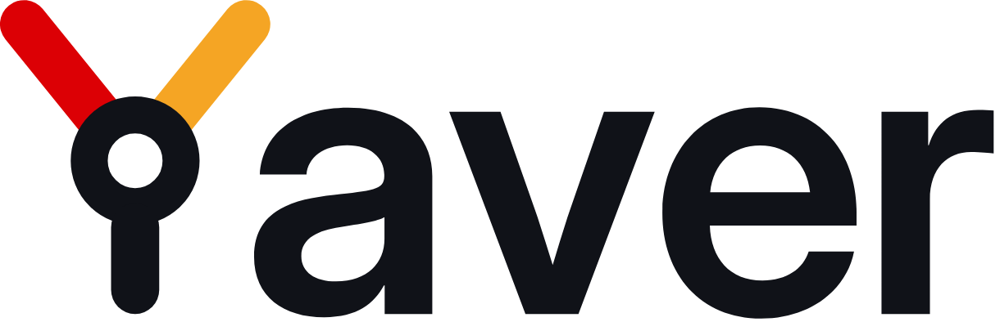
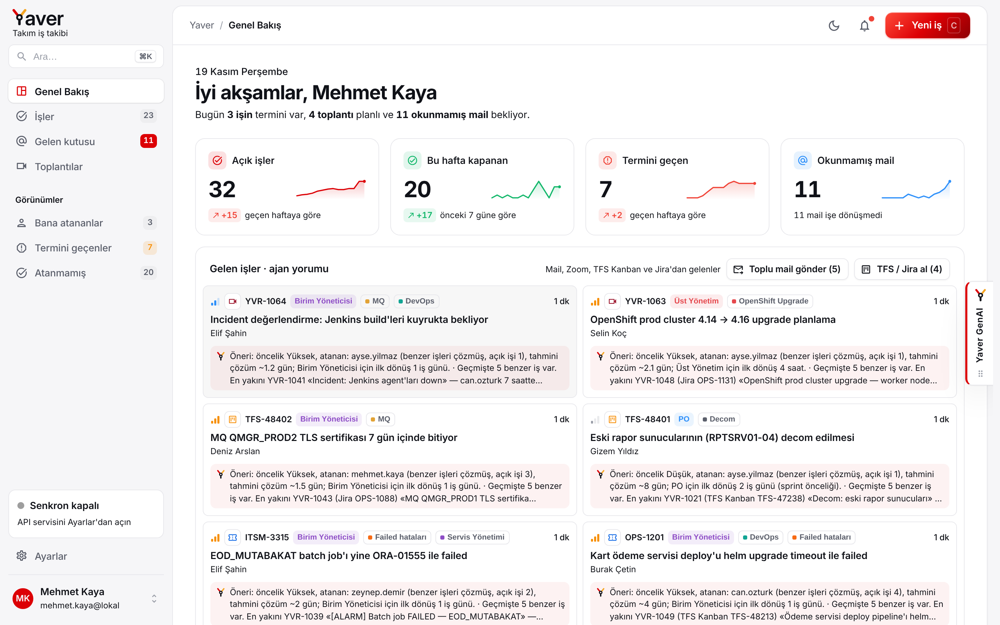
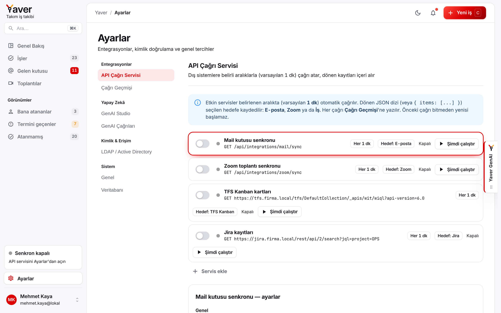
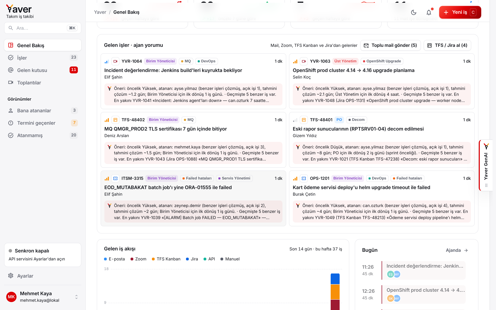
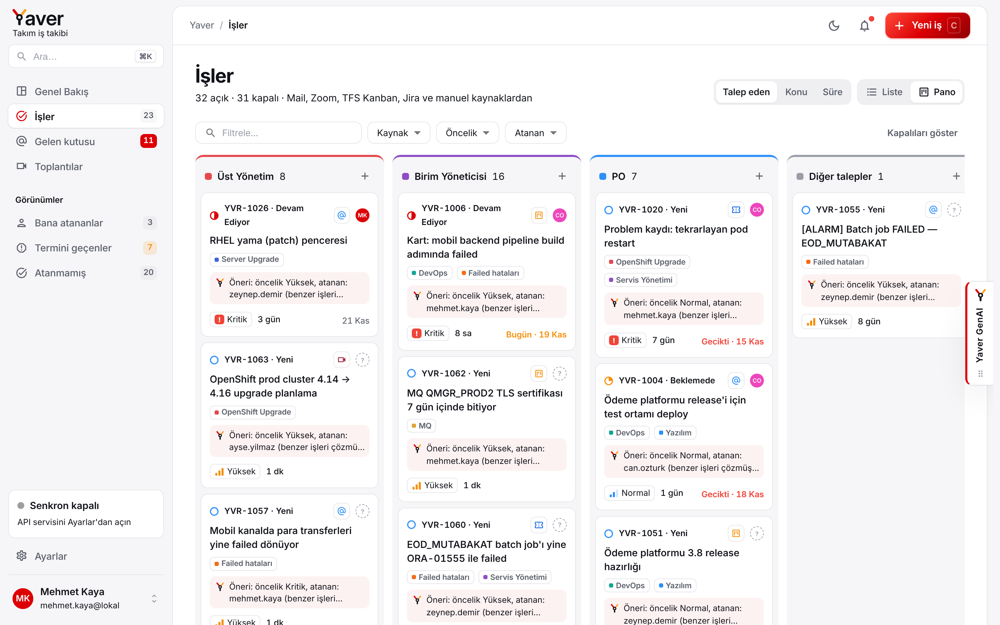
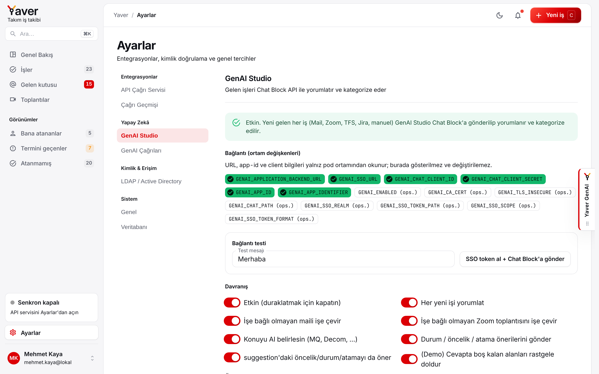
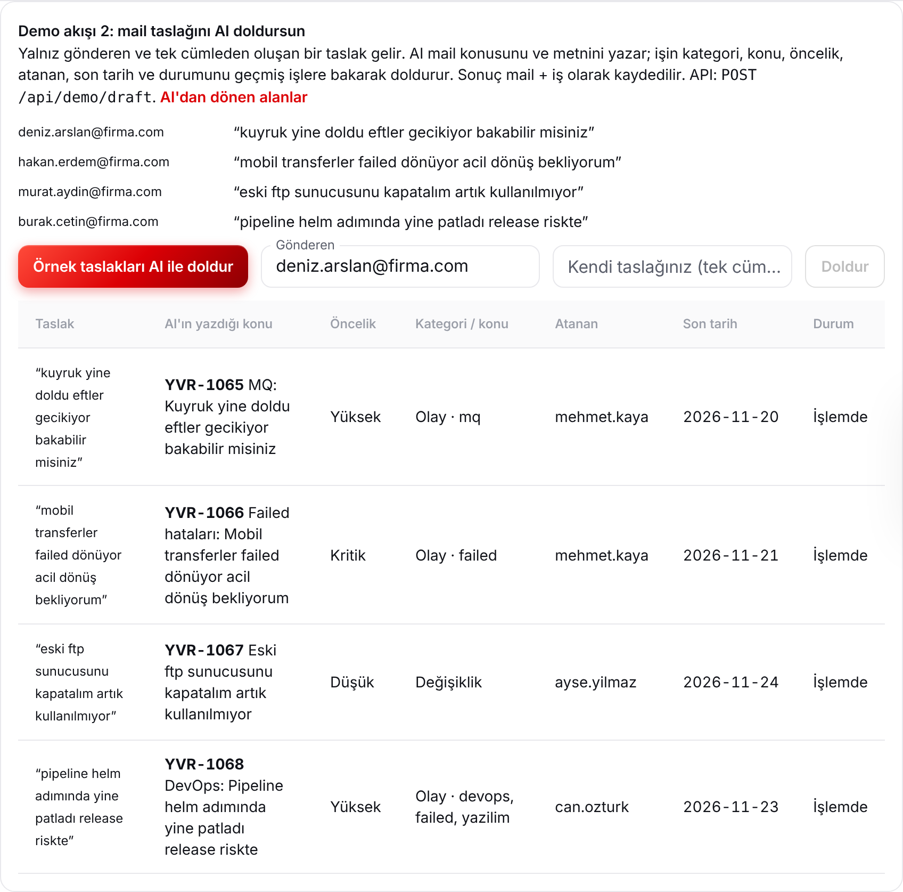
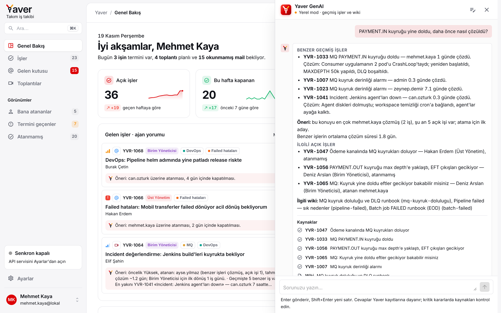
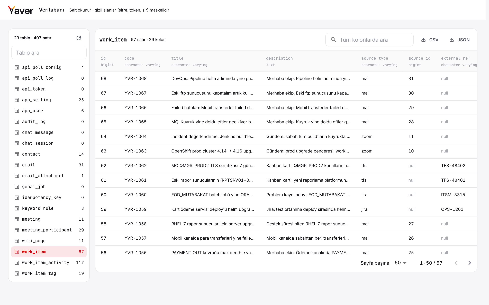

yâver
Farsça kökenli bir kelime. İlk anlamı yardımcı, destekçi.
Dilimizde hâlâ yaşıyor: “Allah yâr ve yâverin olsun.”
Takım iş takibi · Sürüm 0.9.12

Mail, Zoom, TFS Kanban ve Jira’dan gelen her işi tek yerde toplayan, önceliklendiren ve geçmişe bakarak yorumlayan takım yardımcısı.
Yaver nedir?
Farsça kökenli bir kelime. İlk anlamı yardımcı, destekçi.
Dilimizde hâlâ yaşıyor: “Allah yâr ve yâverin olsun.”
Askerî anlam
Bir general, komutan ya da devlet başkanının yanında, onun işlerini görmek için görevlendirilen subay.
Tarihte
Osmanlı sarayındaki padişah yaverlerinden bugünkü komutan ve cumhurbaşkanı yaverlerine uzanan bir görev. Omuzdaki kordonla tanınır.
İsmin ürünle bağı
| Bir komutanın yaveri ne yapar? | Yaver uygulaması ne yapar? |
|---|---|
| Gelen evrakı ve haberi karşılar | Mail, Zoom, TFS Kanban ve Jira’dan gelen her işi toplar |
| Randevuları ve ajandayı tutar | Toplantıları, son tarihleri ve “bugün” listesini gösterir |
| Kimin ne istediğini bilir, önemliyi öne alır | Talep edeni Üst Yönetim, Birim Yöneticisi, PO diye ayırır, önceliği önerir |
| Verilen emrin takibini yapar, unutturmaz | Atanan, durum ve termin takibi; geciken iş görünür olur |
| Geçmişi hatırlar, komutana not geçer | Benzer eski işlere, wiki ve maillere bakıp “ajan yorumu” yazar |
| Son kararı komutan verir | Kritik değişiklikler öneri olarak gelir, kararı insan verir |
Sorun neydi?
Talepler, alarmlar, “acil” notları ve CC zincirleri
Zoom
Toplantıda söylenen ama hiçbir yere yazılmayan işler
TFS Kanban
Failed pipeline’lar, release ve deploy kartları
Jira
Incident, problem ve change kayıtları
Sorun neydi?
Üst Yönetim, Birim Yöneticisi ve PO talepleri aynı kuyruğa düşüyor. Üst Yönetim birkaç saat içinde dönüş beklerken, bu fark görünmüyor.
Maildeki iş Jira’ya, toplantıdaki karar TFS’e taşınmıyor. Sahibi ve termini belirsiz işler sessizce gecikiyor.
MQ kuyruğu doluyor, pipeline failed oluyor… Geçen sefer kim, nasıl, kaç günde çözdü bilgisi kişilerin aklında kalıyor.
Her sabah kanalları tek tek gezip neyin önce yapılacağına karar vermek zaman alıyor ve kişiye bağlı.
Neyi çözüyoruz?
Mail · Zoom
TFS Kanban · Jira
Manuel iş
Her gelen kaydı işe çevirir. Konuyu (MQ, OpenShift, Decom…) ve talep edenin seviyesini belirler. Geçmiş işler, wiki ve maillere bakıp ajan yorumu yazar.
Tek pano
Öncelik, atama önerisi
Onay ve takip
Kategori ve etiket gibi zararsız alanlar doğrudan yazılır. Durum, öncelik, atama ve termin değişikliği her zaman bir insanın onayına düşer.
SDLC’de Yaver
1 · Talep ve planlama
Mail, Zoom ve PO talepleri işe dönüşür; talep edenin seviyesine göre öncelik önerilir.
2 · Analiz
Benzer eski işler, çözen kişi, süre ve runbook ajan yorumunda hazır.
3 · Geliştirme ve build
TFS Kanban’daki failed kartlar konusu ve önerilen sahibiyle gelir.
4 · Test ve release
Test ortamı deploy’u, release hazırlığı ve CAB onayları termin ile takip edilir.
5 · Deploy ve change
OpenShift ve server upgrade, change takvimi ve dondurma dönemleri tek panoda.
6 · Operasyon ve bakım
MQ alarmı, batch failed, incident ve problem kayıtları, decom; çözüm hafızaya yazılır.
SDLC’de Yaver
| Aşama | Bugünkü sorun | Yaver ile |
|---|---|---|
| Talep | Talep mailde ya da toplantıda kalıyor | Her talep otomatik işe dönüşür |
| Planlama | Kimin istediği, ne kadar acil belirsiz | Seviye ve ilk dönüş hedefi görünür |
| Analiz | Aynı sorun sıfırdan araştırılıyor | Benzer iş, çözen kişi ve runbook hazır |
| Build | Failed pipeline kimin, belli değil | Konu ve atanacak kişi önerilir |
| Release | Ortam ve CAB talepleri gözden kaçıyor | Termin ve onay adımıyla takip |
| Operasyon | Alarm, incident ve problem dağınık | Tek pano, geçmişe dayalı yorum |
| İyileştirme | Tekrarlayan sorunlar fark edilmiyor | Konuya göre geçmiş ve çözüm süresi |
Yaver TFS, Jira ya da CI aracının yerini almaz; onların üstünde duran takip, önceliklendirme ve hafıza katmanıdır.
Paralelde yapılan işler
v0.2 – v0.4
Önyüz, API ve veri tek konteynerde.
v0.5
LangGraph için REST ve SSE.
v0.6
DB, Wiki ve Mail geçmişi.
v0.7
Talep eden kırılımı.
v0.8
Chat Block ve AI yanıt formatı.
v0.8.2 – v0.9.0
200 dönen bağlantı, demo iş akışı.
v0.9.1 – v0.9.9
Sohbet paneli, taslak akışı.
v0.9.10 – v0.9.12
Salt okunur DB, istek işaretleri, kırmızı tema.
Yapılan işler · v0.2 – v0.4

Yapılan işler · v0.3 – v0.4

Yapılan işler · v0.5
Yeni iş gelince Yaver olay yayınlar: webhook ya da çekme ile.
Ajan işi, benzer işleri ve ekibi REST ile okur.
Yorum yazar, değişiklik önerir.
Politika gereği öneriler insana düşer.
Ekibin kararı: sade REST uçları ve chat için SSE akışı.
Kategori, etiket ve bağlantı doğrudan; durum, öncelik, atama ve termin öneri olarak.
Kapsamlı ajan token’ları, kullanıcı adına chat ve uçtan uca test.
Yapılan işler · v0.6

Yapılan işler · v0.7

Yapılan işler · AI yanıt formatı
Yorum
İşe ajan yorumu olarak yazılır; dayandığı kaynaklar ve güven puanı ile.
Değişiklikler
Durum, öncelik, atama önerileri. Neyin doğrudan, neyin onayla yapılacağına politika karar verir.
Güvenlik
Maildeki “işi kapat” uygulanmaz. Kapatma ve iptal her zaman onaya düşer.
Gerçek çıktıyla iki uçtan uca örnek belgelendi: Üst Yönetim’den MQ talebi ve TFS failed pipeline. Olay, bağlam, LLM isteği, AI yanıtı, Yaver çağrıları ve kullanıcı onayı adım adım.
Yapılan işler · v0.8

Yapılan işler · v0.8.1 – v0.9.2
Bağlantı
Adres birleştirme düzeltildi ve kurum içi sertifika desteği eklendi; SSO token ve Chat Block çağrısı gerçek ortamda başarıyla yanıt veriyor. Ortam değişkenleri için rehber ve Secret şablonu hazır.
Demo akışı 1
Mail, Jira, TFS ve Zoom’dan “yeni gelmiş” gibi görünen 9 senaryo. Her biri DB’de geçmişi olan bir konuya bağlı, AI benzer işlere bakarak yorumlar. Tekrar çalıştırınca çift kayıt olmaz.
Sıfırlama
Demo işleri tek uçla silinir, tüm veri örnek hâline döner. Yeni sürüm yayılınca (rollout) sohbet geçmişi temizlenir.
Yapılan işler · v0.9.8

Yapılan işler · v0.9.0 – v0.9.9

Yapılan işler · v0.9.10

Yapılan işler · v0.9.11
[YAVER:TRIYAJ]
Mail, Jira, TFS, Zoom ve demo akışı 1. Çıktı: AI yorum şemasında JSON (özet, yorum, sınıflandırma, öneriler).
[YAVER:TASLAK]
Demo akışı 2. Çıktı: konu, metin, öncelik ve kategori içeren JSON.
[YAVER:SOHBET]
İkinci satır “SORU: …”. Çıktı: Türkçe, okunur düz metin.
GenAI Studio akışı, İstek Türü Kontrolü ile doğru ajana dallanır. Yanıt hangi biçimde gelirse gelsin Yaver çözer; eksik alanlar geçmişe göre tamamlanır.
Yapılan işler · v0.9.6
İki kol tek bir düğümde birleşip Y’nin gövdesini oluşturur: dağınık gelen işler Yaver’de bağlanır. Giriş ekranı, menü, Yaver GenAI paneli, uygulama ikonu ve favicon’da kullanılıyor.
Demo
Ekibin geçmişi tek bir metin dosyasında: ekip, talep edenler ve ilk dönüş hedefleri, konular, runbook’lar, işler, mailler ve toplantılar.
54
iş
24
11
wiki sayfası
9
Zoom toplantısı
Ne değer kattık?
Görünürlük
Mail, Zoom, TFS ve Jira’daki iş tek listede. Talep edene, konuya ve süreye göre gruplanıyor.
Doğru öncelik
Üst Yönetim, Birim Yöneticisi ve PO talepleri ayrışıyor; her biri kendi ilk dönüş hedefiyle.
Kurumsal hafıza
Yeni iş geldiğinde benzer eski iş, çözen kişi, süre ve runbook önüne geliyor.
Kontrol
Kritik değişiklikler onaya düşüyor; gizli bilgiler yalnız ortamda, kodda değil.
Sonraki adımlar
| Adım | Ne yapılacak |
|---|---|
| GenAI test seti | Triyaj, taslak ve sohbet için soru ve beklenen cevap seti (hazırlanıyor) |
| Gerçek kaynaklar | Mail kutusu, TFS ve Jira bağlantılarını API servisine tanımlamak |
| Canlı ayarları | Demo için açık olan “boş alanları doldur” seçeneğini kapatmak |
| Konu düzeltme | Kullanıcının AI’ın belirlediği konuyu tek tıkla düzeltebilmesi |
| Ölçüm | İlk dönüş ve çözüm sürelerini pilot öncesi ve sonrası karşılaştırmak |
| Politika ayarı | Ekip geri bildirimiyle neyin doğrudan, neyin onayla yapılacağını netleştirmek |
Teşekkürler · Sorular?